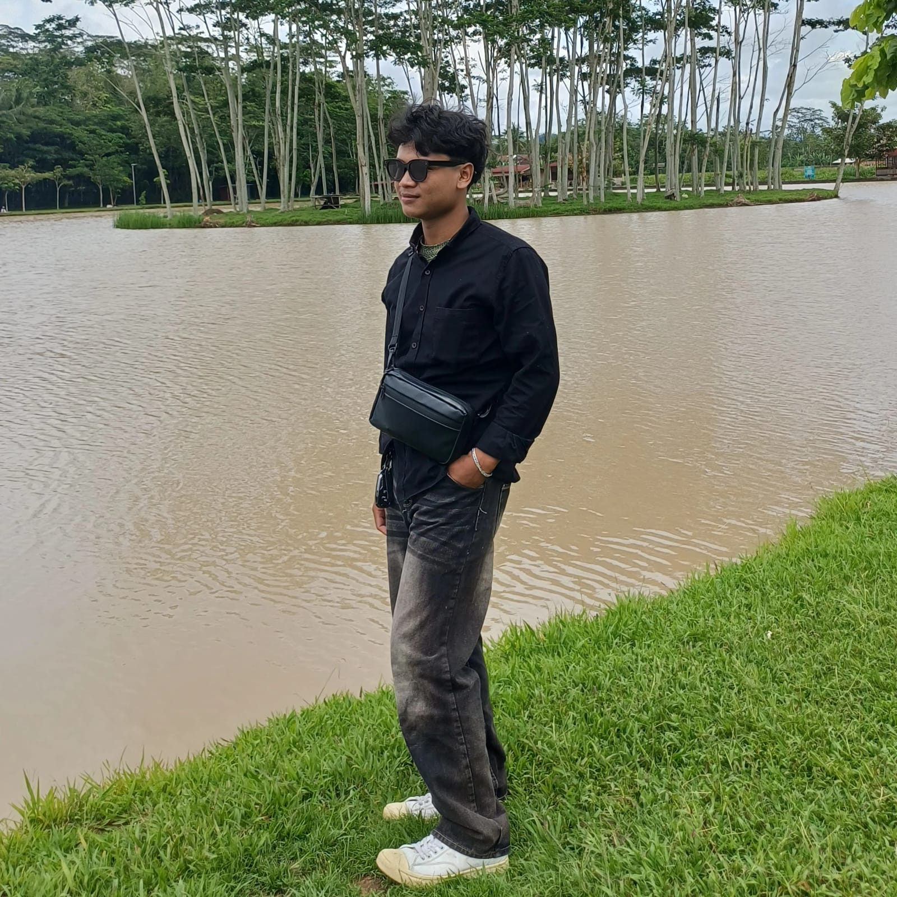

Siapa Saya
Mahasiswa Desain Komunikasi Visual di Universitas Negeri Semarang, angkatan 2024.
Ketertarikan saya ada pada eksplorasi tipografi, komunikasi visual, dan bagaimana sebuah desain bisa menjadi solusi nyata. Bagi saya, desain bukan sekadar membuat sesuatu terlihat bagus tapi memastikan pesan tersampaikan dengan tepat dan bermakna.
Keahlian
Photoshop
Illustrator
CorelDRAW
Figma
Affinity
Di Luar Kuliah
Aktif mengerjakan proyek-proyek personal dan terbuka untuk kolaborasi kreatif bersama siapa saja yang punya semangat yang sama dalam dunia visual.
Lihat Portfolio →